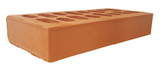
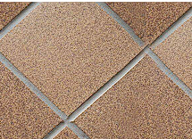
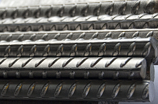
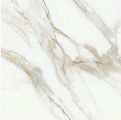

| Ladrillo cerámico | |
|---|---|
| Descripción | Elemento de construcción a base de arcilla cocida, utilizado para cerramientos y divisiones. |
| Identificación de la aplicación en obra | Aplicado en muros de fachada y tabiques interiores. |
| Foto |  |
| Adecuación | Buen aislamiento térmico y acústico, económico y fácil de instalar. |
| Posible contradicciones | Baja resistencia a la humedad si no se impermeabiliza correctamente. |
| Material alternativo | Bloques de hormigón. |
| Baldosas cerámicas | |
|---|---|
| Descripción | Revestimientos de cerámica de alta calidad, utilizados para pisos y paredes, resistentes al desgaste. |
| Identificación de la aplicación en obra | Acabados de suelos y paredes en cocinas, baños y zonas comunes. |
| Foto |  |
| Adecuación | Durabilidad, fácil limpieza, amplia variedad de diseños y colores. |
| Posible contradicciones | Fragilidad frente a impactos y posible acumulación de manchas si no se trata adecuadamente. |
| Material alternativo | Porcelanato. |
| Acero | |
|---|---|
| Descripción | Material metálico de alta resistencia usado como refuerzo en estructuras de hormigón armado. |
| Identificación de la aplicación en obra | Refuerzo de pilares, vigas y cimentaciones. |
| Foto |  |
| Adecuación | Excelente resistencia a tracción, versatilidad y compatibilidad con hormigón. |
| Posible contradicciones | Corrosión si no está protegido adecuadamente. |
| Material alternativo | Aluminio en estructuras ligeras. |
| Mortero de cemento | |
|---|---|
| Descripción | Mezcla de cemento, arena y agua para acabados superficiales y unión de piezas. |
| Identificación de la aplicación en obra | Enlucido de paredes, colocación de ladrillos y nivelación de superficies. |
| Foto | |
| Adecuación | Buena adherencia, versatilidad y durabilidad. |
| Posible contradicciones | Sensible a mezclas inadecuadas. |
| Material alternativo | Mortero de cal. |
| Mármol | |
|---|---|
| Descripción | Piedra natural utilizada en acabados de lujo. |
| Identificación de la aplicación en obra | Pisos y revestimientos en áreas exclusivas. |
| Foto |  |
| Adecuación | Elegancia, durabilidad y fácil limpieza. |
| Posible contradicciones | Alto costo y propenso a rayaduras. |
| Material alternativo | Granito. |